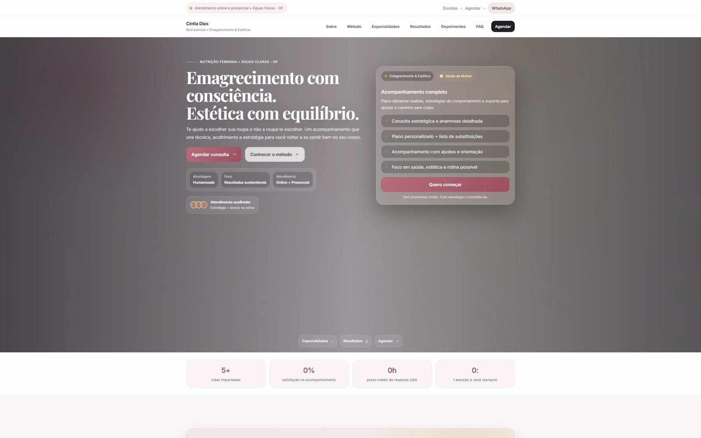
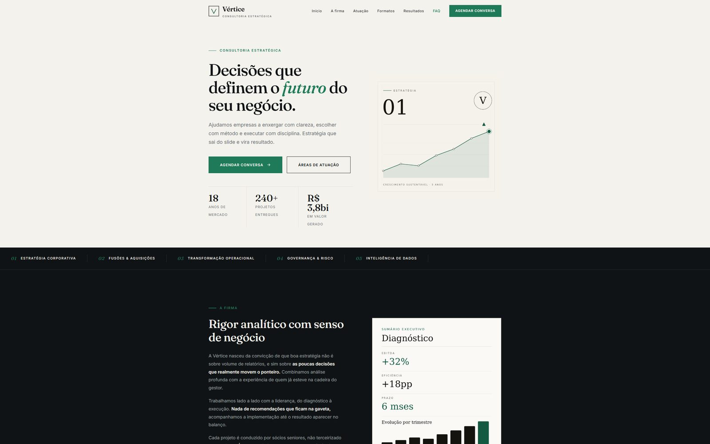
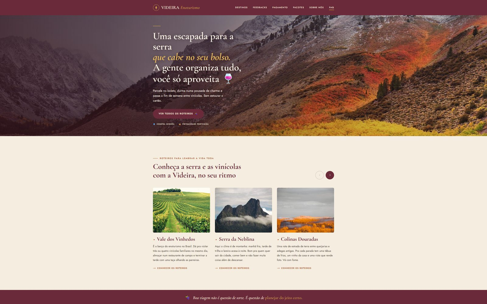

Sites institucionais
O cartão de visita do seu negócio na internet. Rápido, bonito no celular e feito para passar confiança já no primeiro segundo.
Estúdio digital · Brasília, DF
Sou o Jefferson, desenvolvedor aqui de Brasília. Construo sites, landing pages, sistemas e automações para quem cansou de perder cliente por causa de uma presença digital fraca.
Não vendo tecnologia por metro. Vendo o resultado que ela traz para quem está do outro lado da tela.
O cartão de visita do seu negócio na internet. Rápido, bonito no celular e feito para passar confiança já no primeiro segundo.
Uma página com um objetivo só: virar visitante em cliente. Certa para campanha, lançamento ou anúncio que precisa converter.
Sistema sob medida para organizar o que hoje vive em planilha, no papel ou na sua cabeça. Do cadastro ao painel de controle.
Aquela tarefa repetitiva que come o seu dia pode rodar sozinha. Menos retrabalho, menos erro e mais tempo para o que importa.
Projetos reais, publicados e funcionando. Dá para abrir cada um e navegar como qualquer cliente faria.

Site de captação para uma nutricionista. Método, resultados e prova social organizados em uma jornada que leva a visita até o agendamento da consulta.
Visitar o site
Site institucional para uma consultoria. Visual sóbrio e editorial, pensado para construir autoridade e conduzir o visitante ao agendamento de uma conversa.
Visitar o site
Landing page de vendas para pacotes de enoturismo. Uma narrativa envolvente, com parcelamento e reserva no mesmo caminho, do primeiro encanto até a compra.
Visitar o siteMe conta o que você tem em mente e eu te mostro como isso vira um site, uma página ou um sistema de verdade.
Falar comigoNunca contratou um desenvolvedor? Fica tranquilo. O caminho é simples e você acompanha cada passo.
A gente bate um papo sobre o seu negócio, o que você precisa e onde quer chegar. Sem compromisso e sem custo.
Volto com escopo, prazo e valor claros. Você sabe exatamente o que vai receber antes de decidir qualquer coisa.
Coloco a mão na massa e vou te mostrando o andamento. Você acompanha, opina e ajusta comigo no caminho.
Publico, te ensino a usar e continuo por perto para o que precisar depois. Nada de sumir na entrega.
Prazer, sou o Jefferson. Ajudo negócios menores a ter na internet a mesma qualidade que as grandes empresas têm.
De dia eu desenvolvo e mantenho sistemas corporativos para uma empresa grande aqui de Brasília. Foi ali que aprendi a construir coisas que precisam funcionar de verdade, com prazo, segurança e gente de negócio contando com o resultado.
Isso quer dizer que o seu projeto não vai parar na mão de um estagiário nem sumir depois de publicado. Você fala direto comigo, do primeiro oi até muito depois do site no ar.
Sou pós-graduado em Engenharia de Software e em Cibersegurança. Então, além de bonito, o que eu entrego é rápido, seguro e feito para durar.
Vamos conversar
Me conta o que você tem em mente. Eu respondo rápido e a primeira conversa é sempre sem custo.